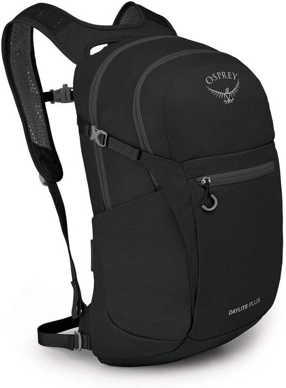
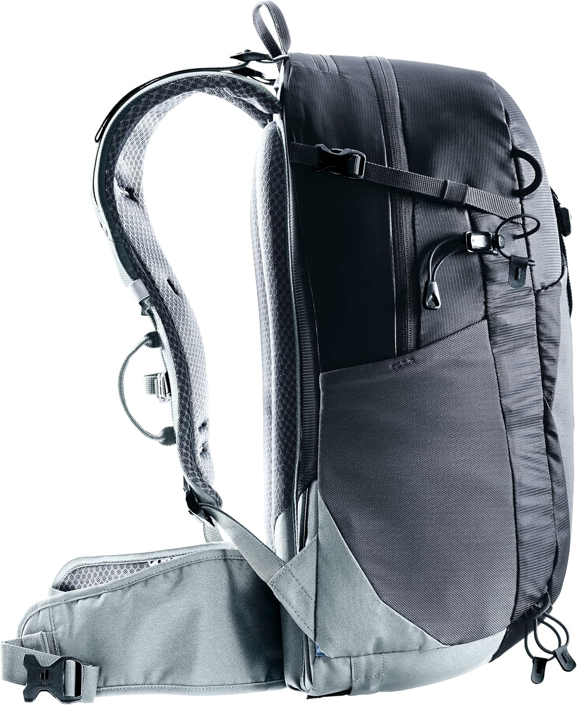

Gear review
Osprey Daylite Plus
An honest review of one of the most popular daypacks on the market. What owners say, what professional testers found, and who it's really for.

There is a specific moment on every hike when you realize whether your backpack is working or not.
It's not at the trailhead. It's not on the climb. It's about two hours in, when your shoulders start to ache and you reach behind you to adjust a strap that has been sliding for the last mile. That's the moment you know.
Most daypacks have that moment. The Osprey Daylite Plus mostly doesn't. And that small thing is why it's become one of the most popular daypacks in the world.
But it isn't perfect. Here's the honest picture.
The short version
The Osprey Daylite Plus is a 20-liter daypack built for day hikes, commutes, and short trips. It weighs about a pound and a half, has a ventilated back panel, deep water-bottle pockets, and a padded laptop sleeve. Osprey backs it with a lifetime warranty.
It's excellent at what it does. It's not the right pack for every situation.
Our verdict
Buy the Osprey Daylite Plus if you want one light, well-organized pack for day hikes, commutes, and travel. Skip it if you need a backpacking pack or want a bag that stands up on its own.
Who it's for
- Day hikers. It holds what you need for a 5-to-10-mile hike: water, snacks, a light layer, first aid, and a map.
- Commuters. The padded laptop sleeve and organized pockets make it work as a daily carry bag.
- Travelers. It fits under most airplane seats and doubles as a day bag once you land.
- People who want one bag for everything. Owners repeatedly call it their "daily" or "everyday" pack.
Who it's not for
- Overnight backpackers. Twenty liters is too small for a sleeping bag and tent.
- People who want a bag that stands up on its own. Multiple owners complain that it flops over when set down. This is the most common frustration.
- Anyone who needs exactly 30 liters. Some listings say 30L. The actual capacity is 20L.
- Heavy-load carriers. The hip belt is thin. It's built for light loads, not heavy ones.
What owners say
We didn't test this pack ourselves. What we did was read through hundreds of verified Amazon reviews for the Osprey Daylite Plus — the praise and the complaints — and look for patterns. Here's what keeps coming up.
The praise
"This is my daily backpack. The quality is great." — Michael, Amazon review
"Used daily for 6 months. 0 complaints." — Carrie, Amazon review
"Lightweight, comfortable to wear, laptop friendly, affordable. Exceptionally good." — Sumesh, Amazon review
"Deep water bottle pockets to carry the 24 oz Owala bottles. Held 2 bottles with no issues." — Mike, Amazon review
The complaints
"It does not stand up on its own." — Amazon reviewer
"It's marked incorrectly — it is NOT 30L; it is 20L. Smaller than anticipated." — Lauren, Amazon review
"Not very big. Also kind of cheap materials." — Amazon reviewer
What professional testers say
Several outdoor publications have reviewed this pack themselves, with hands-on testing. Their findings line up closely with what owners report:
- OutdoorGearLab has consistently rated the Osprey Daylite Plus among the best daypacks for its balance of weight, comfort, and versatility.
- Switchback Travel lists it as a top pick for travel-friendly daypacks and notes its durable build.
- GearJunkie has praised its comfort and organization for everyday use and light hiking.
- SectionHiker has recommended the Daylite Plus in its daypack buying guides for its low weight and solid organization.
None of them call it a backpacking pack. None of them say it stands up on its own. But all of them agree that for day hikes and travel, it's one of the best options at any price.
The good
- Very light. At about 1.5 lbs, you won't notice it on your back.
- Excellent organization. Multiple pockets plus a laptop sleeve mean everything has a home.
- Deep bottle pockets. They hold 32 oz bottles without stretching out.
- Ventilated back panel. Owners say it stays cool on warm hikes.
- Lifetime warranty. If a zipper breaks, Osprey repairs or replaces the pack.
- Trusted by many. Thousands of reviews. Years of continued recommendations from outdoor publications.
The not-so-good
- It won't stand up on its own. This is the single most common complaint. The pack flops over when set down.
- Smaller than some listings say. Despite listings showing 30 liters, the real capacity is 20.
- Thin hip belt. It's fine for light loads. If you carry more than about 15 lbs, you'll feel it.
- Occasional quality issues. A small number of owners report zipper pulls tearing after a year or so. Osprey's warranty covers these.
How it compares
Osprey Daylite Plus vs. Deuter Trail 25

The Deuter Trail 25 is the step-up choice. It has a more structured frame, Deuter's Airstripes back system, and better load distribution for longer days. It weighs a bit more and is bigger. If you plan to carry more than the essentials — or hike longer days — the Deuter Trail 25 is the better pick. If you want something light for short hikes, the Osprey Daylite Plus stays the better value.
Osprey Daylite Plus vs. REI Co-op Trail 25
The REI Co-op Trail 25 is a similar size and a similar style of pack. It includes a raincover and has a slightly more structured back, but it's not sold on Amazon — you have to buy it from REI directly. If you already shop at REI, it's a strong alternative. If you want the easiest buying experience and the same use case, the Osprey Daylite Plus is the simpler choice.
FAQ
Is the Osprey Daylite Plus 20 liters or 30 liters?
The real capacity is 20 liters. Some Amazon listings incorrectly say 30L. If you need 30 liters, look at a different pack.
Does it fit a laptop?
Yes. It has a padded sleeve that fits most 14-inch laptops. Some owners squeeze in 16-inch models.
Is it waterproof?
No. It repels light rain, but the fabric isn't fully waterproof. For serious rain, buy a raincover.
How much does the Osprey Daylite Plus weigh?
About 1.5 pounds.
What's the warranty?
Osprey offers a lifetime warranty against defects. If something breaks, they repair or replace it.
Can you use it for overnight trips?
Not realistically. It's a daypack. For overnight or multi-day hiking, look at a 40-liter or larger pack.
The verdict
If you need a light, well-organized pack for day hikes, commutes, and travel, the Osprey Daylite Plus is one of the safest buys you can make. It's not flashy. It won't stand up on its own. It won't carry a sleeping bag. But it does its job extremely well, and thousands of owners and professional reviewers agree.
If that describes what you need, this is an easy recommendation.
Some links on Overluking are affiliate links. If you buy through one, we may earn a commission at no extra cost to you. Read the full disclosure.